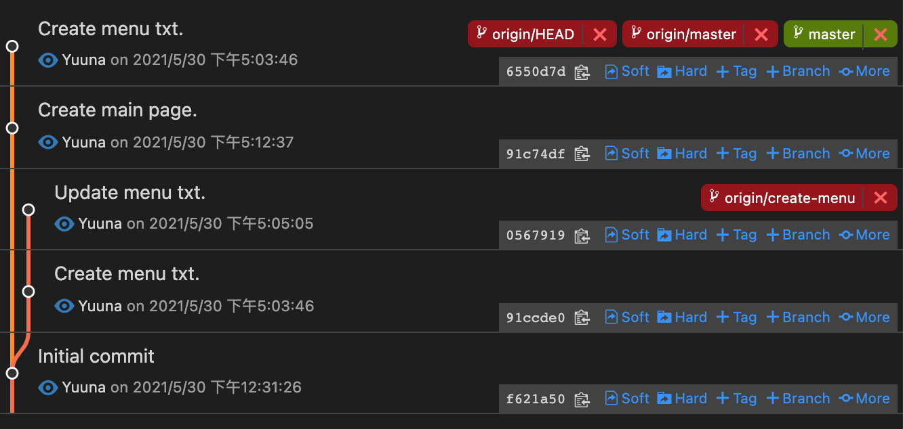

簡介
此篇文章主要使用 Command 的方式來操作，會先介紹一下會使用到的各個 Command 使用方法與功用，再介紹三種可以跨 Repository 取得 Commit 或 Merge Request (or Pull Request) 的方式。
Command 介紹
這邊預設對 Git 有一定的基礎 (clone、pull、push、log…)，故僅介紹此篇主要使用的相關 Command。
remote
Remote 為管理遠端 Repository 的功能，並可對每個連結的 Repository 設定名稱。
預設在 git clone 之後，會有一個預設的 origin 名稱，這是 git 給的預設名稱。
可以使用 git remote 查看目前有設定的 remote。
$ git clone git@github.com:yuuuna/main-project.git
Cloning into 'main-project'...
remote: Enumerating objects: 3, done.
remote: Counting objects: 100% (3/3), done.
remote: Total 3 (delta 0), reused 0 (delta 0), pack-reused 0
Receiving objects: 100% (3/3), done.
$ cd main-project
$ git remote
origin使用 git remote -v 可以查看名稱 + Repository Url。
$ git remote -v
origin git@github.com:yuuuna/main-project.git (fetch)
origin git@github.com:yuuuna/main-project.git (push)使用 git remote add <名稱> <git repo url> 新增連結的遠端 Repository。
$ git remote add sub git@github.com:yuuuna/sub-project.git可以檢查一下剛剛新增的 remote，確認關聯成功！
$ git remote
origin
sub
$ git remote -v
origin git@github.com:yuuuna/main-project.git (fetch)
origin git@github.com:yuuuna/main-project.git (push)
sub git@github.com:yuuuna/sub-project.git (fetch)
sub git@github.com:yuuuna/sub-project.git (push)目前設定了一個 sub 的遠端，但是可以發現目前沒有抓取此 Repo 的任何資訊，使用 git log 可觀察到目前還不認識 sub 裡面 master 這個分支。
$ git log sub/master
fatal: ambiguous argument 'sub/master': unknown revision or path not in the working tree.
Use '--' to separate paths from revisions, like this:
'git <command> [<revision>...] -- [<file>...]'那接下來進入下個章節 fetch 學習抓取 sub 這個遠端的資訊。
fetch
Fetch 可以抓取遠端資訊，把目前還沒載下來的資訊都抓下來。
現在我們把上一個指令中新增的 sub Repository 下載下來。
$ git fetch sub
remote: Enumerating objects: 6, done.
remote: Counting objects: 100% (6/6), done.
remote: Compressing objects: 100% (3/3), done.
remote: Total 6 (delta 0), reused 3 (delta 0), pack-reused 0
Unpacking objects: 100% (6/6), 832 bytes | 166.00 KiB/s, done.
From github.com:yuuuna/sub-project
* [new branch] master -> sub/master可以驗證一下，現在下載完成了，再試一下 git log，可以查看到 sub 的 master 分支 commit 內容囉！
$ git log sub/master
commit 19f7e1c17d4635733c96e1d512a3e5da2cbf2161 (sub/master)
Author: Yuuna <k9532121@gmail.com>
Date: Sun May 30 15:21:11 2021 +0800
Initial commit
(END)cherry pick
cherry-pick 的功能是「撿分支」，假如你目前的分支只想要其他分支的某幾個 Commit，那就很適合使用 cherry-pick 這個功能。
使用方法為：git cherry-pick <commit SHA>
目前專案分支如下，有兩條分支 master、create-menu。

那現在想要將 create-menu 的 91ccde(Create menu txt.) 紀錄放到 master 分支上，
但不希望 056791(Update menu txt.) 也併到 master 上，
那這個情境就很適合使用 cherry-pick 這個方法。
僅要將目前的分支先切到 master，然後使用 cherry-pick 想要的紀錄(91ccde)，即可完成囉！
$ git cherry-pick 91ccde
[master 6550d7d] Create menu txt.
Date: Sun May 30 17:03:46 2021 +0800
1 file changed, 2 insertions(+)
create mode 100644 menu.txt再觀察一下線圖，可以看到 Commit 紀錄也存在於 master 的分支上囉～

PS. 若是只想要這個 Commit 的修改紀錄，但是不要有 Commit 的送出紀錄，可以加上 --no-commit，那僅會將調整紀錄放至暫存區。
$ git cherry-pick 91ccde --no-commit
$ git status
On branch master
Your branch is behind 'origin/master' by 1 commit, and can be fast-forwarded.
(use "git pull" to update your local branch)
Changes to be committed:
(use "git restore --staged <file>..." to unstage)
new file: menu.txtdiff
Diff 為比對檔案的修改紀錄，可以比對當前修改的有哪些、或是哪些 commit 區間的修改紀錄，接下來介紹幾個比較常用的方法。
git diff：比對當前的修改紀錄，此比對是在執行git add之前的檔案。git diff --cached：這個比對的時機點是git add之後，git commit之前，適用於執行 commit 之前做的檢查！git diff <commit SHA>：這個會比對填入的 commit SHA ~ 當前工作目錄區間的修改紀錄。若想要看上一個 Commit 的紀錄，可以使用git diff HEAD^。git diff <start commit SHA> <finish commit SHA>：這個就是比對兩個 commit 區間的修改紀錄囉。
簡單對一個檔案進行了調整，使用 git diff 呈現如下：
diff --git a/index.txt b/index.txt
index 102db4a..853827d 100644
--- a/index.txt
+++ b/index.txt
@@ -1 +1,3 @@
Add txt
+
+Update txt
(END)
這個應該蠻好懂的，大部分可能會使用 IDE 來幫助我們去看修改紀錄，不過這個指令搭配 apply 其實就可以幫助我們匯入此次調整紀錄！
apply
Apply 對一般使用 git 的人應該會比較陌生，Apply 的功能簡單講的話，就是同意一個 Diff 檔案的修改紀錄，而這個 Diff 檔案就是由 git diff 來產生。
那同意一個 Diff 檔案是什麼意思？
他會將這個 Diff 檔案的修改紀錄，都放到暫存區裡面。
說這麼多可能還是很模糊，直接來看實作比較好暸解！
這是 Diff 檔案的樣子，其實就是 git diff 後的結果XD
diff --git a/index.txt b/index.txt
new file mode 100644
index 0000000..102db4a
--- /dev/null
+++ b/index.txt
@@ -0,0 +1 @@
+Add txt
那要把這個 Diff 放到暫存區，只要執行 git apply <diff file> 即可。
# diff 的檔案名稱為 add.diff
$ git apply add.diff
# 完成 apply 了，使用 status 檢查一下，確認已經進入暫存區了
$ git status
On branch master
Your branch is up to date with 'origin/master'.
Untracked files:
(use "git add <file>..." to include in what will be committed)
index.txt
nothing added to commit but untracked files present (use "git add" to track)format patch
在 GitHub 或是 GitLab 上，其實都可以直接產出 format-patch 此功能產出後的檔案，
這個檔案內容是使用 email 的格式，範例如下：
From a61120f0a011bbd51688808e8ba91f2af39dbcd4 Mon Sep 17 00:00:00 2001
From: Yuuna <k9532121@gmail.com>
Date: Sun, 30 May 2021 17:02:01 +0800
Subject: [PATCH] Add index.txt
---
index.txt | 1 +
1 file changed, 1 insertion(+)
create mode 100644 index.txt
diff --git a/index.txt b/index.txt
new file mode 100644
index 0000000..102db4a
--- /dev/null
+++ b/index.txt
@@ -0,0 +1 @@
+Add txt
--
這個方法翻譯成指令：
git format-patch --stdout <start commit SHA> <finish commit SHA> > update.patch
那這邊僅介紹使用 GitHub 與 GitLab 產出的方法，
這兩個網站使用的方法是相同的，以下將以 GitHub 為範例，
那他支援 Commit 或是 Pull Request (Merge Request) 的使用。
假設目前我有一個 Commit 如下畫面：

https://github.com/yuuuna/sub-project/commit/a61120f0a011bbd51688808e8ba91f2af39dbcd4，
那要產出 format-patch 的話，只要在網址最後面增加 .patch 就可以囉！

Pull Request (Merge Request) 的方法相同，只要在 Pull Request 的頁面網址後面增加 .patch，都會是 email 格式的 Patch 檔案。
那這個檔案可以搭配 am 指令，可以更加方便的匯入修改紀錄。
am
am 的功能為同意一個 Email 格式的 Patch，把這一個 Patch 的 Commit 修改紀錄，放進需要調整的 Repository 裡面，
而這個功能是搭配 format patch 來進行使用。
am 的指令為：
git am -3 < <patch file>
那假設目前有一個 Patch 檔案，名稱為 AddIndex.patch
# 進行匯入此 Patch 至當前專案
$ git am -3 < AddIndex.patch
Applying: Add index.txt
# 同意成功，使用 log 確認有 commit 紀錄
$ git log -1
commit df73650b075149333a2e5b99572cbaa655fcda78 (HEAD -> master)
Author: Yuuna <k9532121@gmail.com>
Date: Sun May 30 17:02:01 2021 +0800
Add index.txt
(END)這樣就把 AddIndex.patch 的修改紀錄放至當前的 Repository 裡面囉！
實作：取得跨 Repository 取得紀錄
這邊將運用上面 Command 的介紹，組合出三種不同的方法，並可依照不同的情境來選擇方法。
方法一：remote + cherry pick
這個方法最好懂，也最適合新手，方法就是去撿想要的 Commit 紀錄過來。
流程如下：
- 使用
git remote遠端想要的 Repository - 使用
git fetch剛剛設定的 Remote - 使用
git cherry-pick把想要的分支撿過來，就完成囉！
那現在以案例來實作，目前有兩專案 main-project、sub-project，而 commit 紀錄如下圖：


目前想要在 main-project 的 master 分支新增 sub-project 的 a61120 Commit 紀錄，
操作如下：
# 1. Remote 需要的 Repository
$ git clone git@github.com:yuuuna/main-project.git
# 2. Fetch 剛剛 Remote 的遠端資訊下來
$ git fetch sub
# [驗證] 可以看想要的 commit SHA
$ git log sub/master
# 3. cherry-pick 需要的分支過來
$ git cherry-pick a61120f0a011bbd51688808e8ba91f2af39dbcd4
# 推送遠端，完成！
$ git push觀察 git graph，有成功將 Commit 紀錄新增在 main-project 的 master 中了。

方法二：diff + apply
若你是熟悉 Git 的使用，那這個方法你只要暸解了 Diff 與 Apply 的功能，可以知道其實也不會太難，輕鬆兩個指令就可以完成，也比起 cherry-pick 的方法精簡一些。
流程如下：
- 使用
git diff <commit 1> <commit 2> > update.diff將調整紀錄輸出成一個檔案，這裡名稱為update.diff - 到我要匯入的專案裡面，使用
git apply update.diff，就會把修改紀錄會進去暫存區了！
那現在以案例來實作，目前有兩專案 main-project、sub-project，而 commit 紀錄如下圖：


目前想要在 main-project 的 master 分支新增 sub-project 的 a61120 Commit 紀錄，
操作如下：
-
先到
sub-project專案目錄下：# 產生 Diff 檔案，需要的是 19f7e1 與 a61120 區間的修改紀錄 $ git diff 19f7e1 a61120 > update.diff -
把
update.diff放至main-project裡面，方便下個步驟直接使用 -
切到
main-project專案目錄下：# 使用 apply 將 update.diff 匯入至暫存區 $ git apply update.diff
這樣就完成囉！
只是這個方法是將調整紀錄放進暫存區，所以後續還要自己進行 Commit 的動作，才能 Push 呦
那可以看接下來第三個方法，也是我最推薦最方便快速的！
方法三：format patch + am
這個方法是我最推薦的方法，只要暸解一下每個步驟的功能，可以簡單上手。
流程如下：
- 在 GitHub (or GitLab) 上到你想要產出修改紀錄的 Commit 或 Pull Request (or Merge Request) 頁面。
- 直接在網址最後方新增
.patch，並下載此頁面的內容為檔案，這裡名稱為update.patch。 - 將檔案放至本地要匯入的 Repository 中。(方便等一下指令直接使用此檔案)
- 使用
git am -3 < update.patch，這樣就把檔案內的每一個 Commit 的修改紀錄都進去囉！
那現在以案例來實作，目前有兩專案 main-project、sub-project，而 commit 紀錄如下圖：
目前想要在 main-project 的 master 分支新增 sub-project 的 a61120 Commit 紀錄，
操作如下：
-
到 GitHub
a61120這一個 Commit 的頁面上。
a61120 commit -
直接在網址最後面新增
.patch，然後下載這個頁面為檔案。
a61120 patch -
將檔案放進
main-project裡面。 -
指令目錄切換到
main-project專案目錄下：# 進行匯入此 Patch 至當前專案 $ git am -3 < update.patch Applying: Add index.txt
這樣就完成囉！
假若你同時維護多個相同底層的系統，
此時要修改底層的東西時，又要同步到各個相同底層的系統，
那這個方法會很方便去實現同步這件事，
將修改紀錄產生一個 Patch 檔案，然後再專案底下使用 am 匯入進去，
最後在 Push 至遠端，完成！